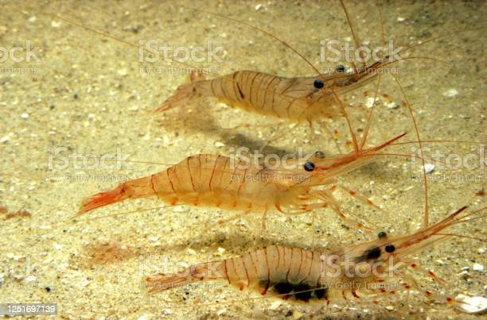

The shrimp is a generic term for animal except crabs and hermit crabs among arthropods, crustaceans, Yeongapgang River, and decagonal trees.
The body of shrimp, like crabs, is wrapped in hard and stiff crusts containing chitinyl, and consists of several bodies. It consists of three parts: head, chest, and belly, and the head and chest are fused to form a shell.